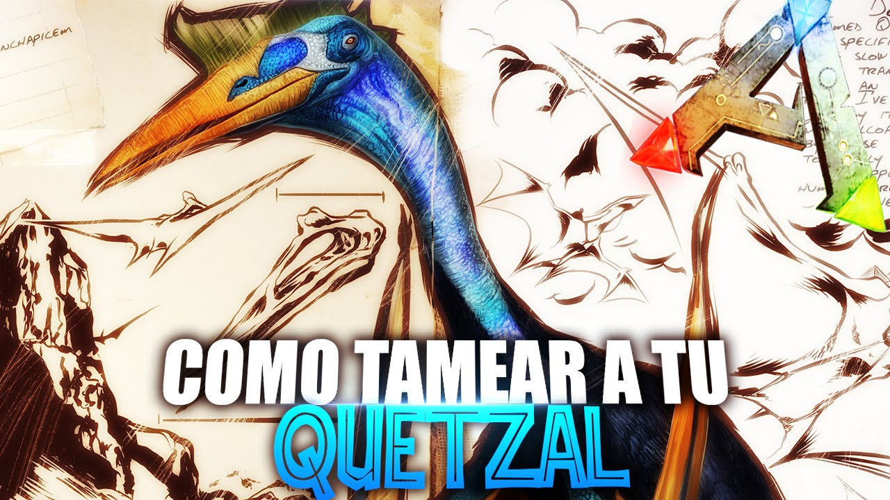

Como tamear al Karkinos
Para tamear un Karkinos en ARK de manera efectiva, equipa un dinosaurio volador con una plataforma de montaje para localizar y sedar al Karkinos. Utiliza armas de proyectiles tranquilizantes para sedarlo, asegurándote de mantenerlo sedado con narcóticos o narcobayas. Alimenta al Karkinos con su comida preferida, como carne cruda, y protege la zona de cualquier amenaza. Una vez completamente alimentado y sedado, espera pacientemente hasta que se complete el proceso de domesticación para tener éxito en tamearlo y agregarlo a tu colección.
Karkinos_versatus
Como tamear al Alosaurio
Para tamear un Alosaurio en ARK, primero localiza un grupo de ellos en áreas como las tierras altas o las regiones montañosas. Utiliza armas tranquilizantes para sedar a uno de los Allosaurios mientras mantienes a los otros a raya. Asegúrate de tener suficientes narcóticos y narcobayas para mantenerlo sedado durante el proceso. Una vez que esté inconsciente, alimenta al Allosaurus con su comida preferida, como carne cruda o carne cocida, para completar el proceso de taming, protegiendo la zona de cualquier amenaza durante el proceso.
Allosaurus_fragilis
Como tamear al Rex
Para tamear un Tyrannosaurus rex en ARK, equipa un dinosaurio volador con una plataforma de montaje para transportarte y sedar al T-Rex con armas tranquilizantes, manteniéndolo sedado con narcóticos y narcobayas. Alimenta al T-Rex con carne cruda o carne cocida para completar el proceso de taming, protegiendo la zona de cualquier amenaza durante el proceso. Una vez que esté completamente alimentado y sedado, espera pacientemente hasta que se complete la domesticación para agregar al T-Rex a tu equipo.
Tyrannosaurus_rex
Como tamear al Wyvern
Para tamear un Wyvern en ARK, primero necesitarás obtener huevos de Wyvern de los nidos ubicados en las regiones montañosas o cuevas de las expansiones Scorched Earth o Ragnarok. Utiliza un dinosaurio volador rápido y ágil, como un Pteranodon o un Argentavis, para robar el huevo y huir rápidamente. Una vez que hayas obtenido el huevo, colócalo en un inventario o en un lugar refrigerado para evitar que se estropee. Luego, encuentra un área segura donde puedas incubar el huevo, ya sea en una base fortificada o con calefacción adecuada para mantener una temperatura constante. Una vez que el huevo eclosione, alimenta al Wyvern bebé con leche de Wyvern, que se obtiene al ordeñar a Wyverns hembra adultas, para acelerar su crecimiento y domesticación. Ten en cuenta que tamear un Wyvern es un proceso intensivo y peligroso, así que asegúrate de estar bien preparado para enfrentarte a los desafíos que conlleva.
Antirrhinum_majus
Como tamear al Quetzal
Para tamear un Quetzal en ARK, primero necesitarás una plataforma de montaje lo suficientemente grande para acomodar a un jugador con un rifle de dardos tranquilizantes y suministros para mantenerlo sedado durante el proceso de taming. Encuentra un Quetzal volando en el cielo y utiliza un dinosaurio volador, como un Pteranodon o un Argentavis, equipado con la plataforma de montaje para seguirlo. Una vez que estés cerca, dispara tranquilizantes al Quetzal mientras lo persigues. Es posible que necesites varios disparos para sedarlo completamente. Una vez que el Quetzal esté inconsciente, mantén su salud y torpor bajo control mientras lo alimentas con su comida preferida, que es la carne cruda, para completar el proceso de tameo. Es importante tener en cuenta que tamear un Quetzal puede llevar bastante tiempo y es esencial estar preparado con suficientes suministros y protección durante el proceso.
Quetzalcoatlus